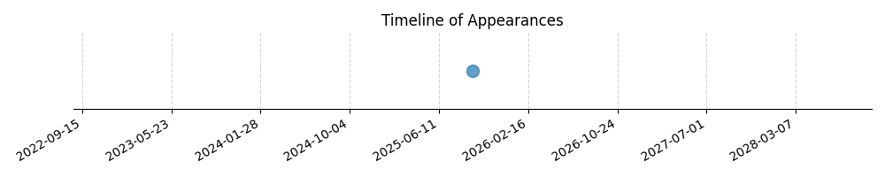

Kategorie: Letecké předpisy
Otázka se týká nastavení výškoměru v specifické letové informační zóně (ATZ) ve vztahu k TMA (Traffic Information Area) a za předpokladu letu pod převodní nadmořskou výškou. Toto spadá pod pravidla pro letové provozní postupy a nastavení výškoměru, což je součástí leteckých předpisů. Možnost C je správná, protože v případě letu v ATZ, která je pod TMA, ale nedotýká se jí, se primárně používá QNH neřízeného letiště, pokud je v provozní době. Mimo provozní dobu neřízeného letiště se pak aplikuje QNH stanoveného letiště, čímž je zajištěna bezpečnost a správná výšková orientace.

| Datum výskytu |
|---|
| 2025-09-13 |